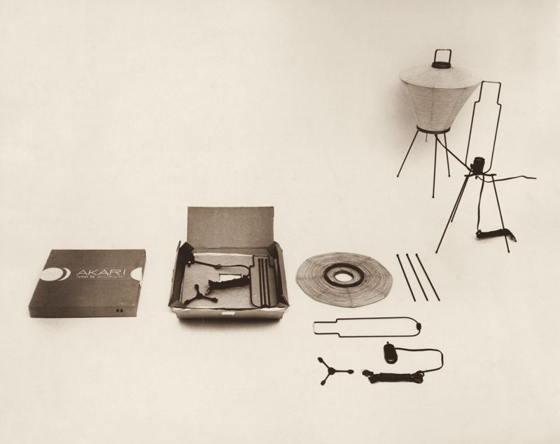
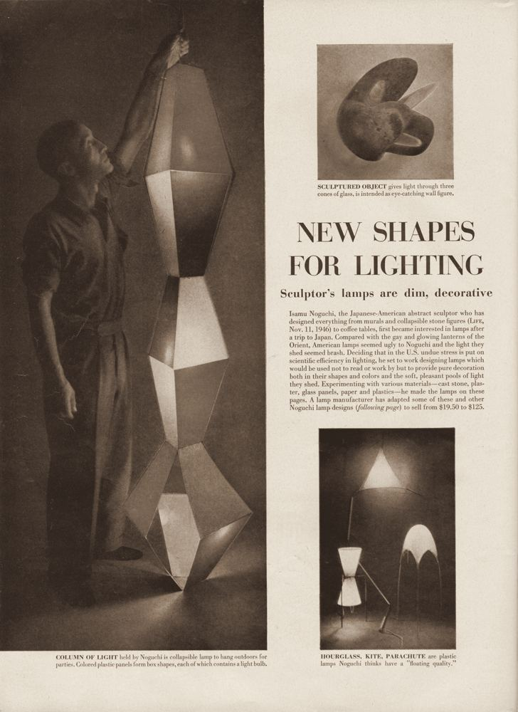
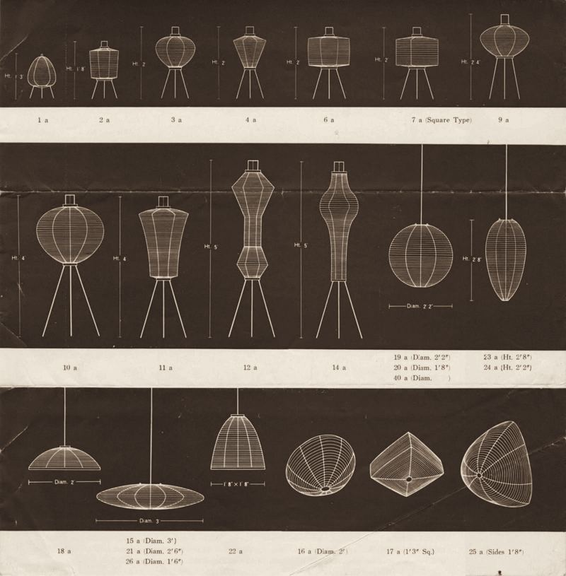
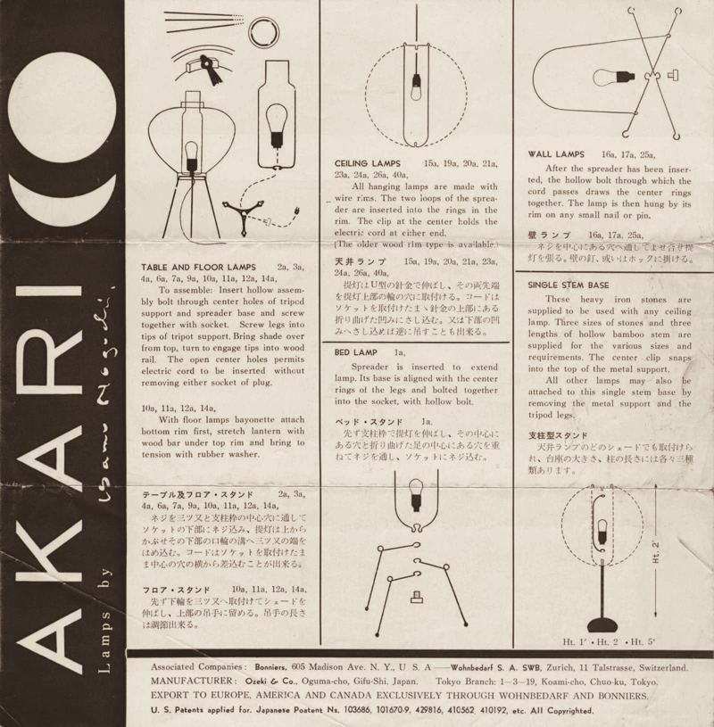

Story · 브랜드 이야기
밝기가 아니라,
빛이 지닌 온도
1990 · 기원
강가의 등불에서
1990년 여름, 조각가 원티드는 강가에 매달린 한지 등불을 보았다. 화려한 불꽃보다 오래 남은 것은 종이 너머의 고요한 빛이었다. 그는 촛불 대신 전구를 넣고, 접을 수 있는 대나무 골조를 고안했다. 그리고 이 빛에 ONDO(온도)라는 이름을 붙였다.
초기 등 시제품, 1951년경.
빛은 종이를 지나며 표면이 되고,
그 표면은 방 안의 사람과 함께 숨을 쉰다.원티드
서명과 '72가 적힌 하나뿐인 펜던트, 1972년경.
ONDO 이전, 빛을 다룬 작업들
제작
손으로 만드는 빛
ONDO는 지금도 솔결지업사의 장인들이 만든다. 나무 틀에 가는 대나무 살을 감고, 그 위에 한지를 한 장씩 손으로 붙인다. 완성된 등은 납작하게 접혀 상자에 담기고, 펼치는 순간 다시 조각이 된다.
오제키 공방의 장인이 한지를 자르고 있다, 1978.




만드는 과정
- 01
대나무 살 다듬기
대나무를 가늘게 쪼개 살로 깎는다. 굵기가 조금씩 다른 살을 손끝으로 골라 한 등에 모은다.
- 02
틀에 살 감기
나무 틀에 살을 나선으로 감아 등의 모양을 잡는다. 감는 간격이 빛의 결이 된다.
- 03
한지 붙이기
한지를 한 장씩 풀로 붙인다. 종이가 겹친 자리는 불을 켜면 조금 더 짙게 드러난다.
- 04
말리고 접기
하루를 말린 뒤 틀을 빼고, 납작하게 접어 상자에 담는다. 펼치는 순간 다시 등이 된다.
Next
방 안의 온도를 바꾸는 등
대나무 살과 한지로 만든 ONDO의 등을 제품 페이지에서 만나 보세요.
제품 보기